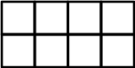
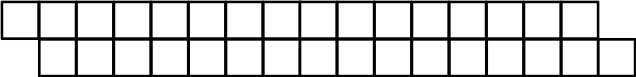

ビーバーはうわさ話が好きで，秘密（ひみつ）を聞くと次の日にはそれをすぐに他のビーバーに伝え（つたえ）ます。
次の図のようなマスがならんでいるとき，それぞれのマスにビーバーは１ぴきずついます。

秘密（ひみつ）を聞いたビーバーは次の日にはとなりのマスのビーバーにその秘密（ひみつ）を伝え（つたえ）ます。たとえば，次の図のようにビーバがいるときに，赤いマスのビーバーに秘密（ひみつ）を伝えると，次の日には黄色いマスのビーバーに秘密（ひみつ）が伝わり（つたわり）ます。
次の図のようなマスにビーバーがいるとき，できるだけ少ないビーバーにだけ秘密（ひみつ）を伝え（つたえ），次の日にすべてのビーバーが秘密（ひみつ）を知っているようにするためには，何びきのビーバーに秘密（ひみつ）を伝え（つたえ）ればよいかしょうか．

正解は「8」